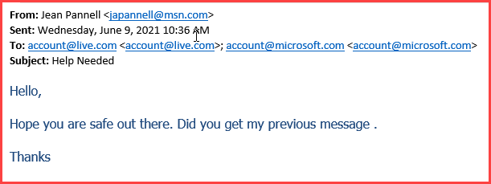

Security Operations Center
Security Awareness
Security awareness is used in organizations to manage the level of human risk. It's important to be aware of threats and how they effect our university. Human error could be as simple as someone clicking on a bad link in an email and entering credentials. This could give a hacker the ability to gain access to sensitive information. Taking a little time to learn about security threats and how to look out for sketchy emails, bad websites, how to create proper passwords, etc. are great ways to reduce risk to our university.
People in any type of organization, or in our case a university, should have some knowledge on how to reduce the possibility of creating an error. Whether that is making sure your passwords are protected, using a secure wifi signal, or knowing how to spot phishing emails, they are all important. Knowing about things such as that can help prevent people from getting the university's information, including the information of students, faculty, and staff.
Being knowledgeable on security risks and threats is important because it is not only the university's information and security that are at risk. Every student, faculty, and staff member all have information stored within the university's networks. This includes full names, addresses, social security numbers, etc. Also, several students and probably staff have their university account directly linked with their bank account. If any of this data were to be compromised, it could be exploited in multiple ways.
Knowing what good practices to employ in creating and protecting passwords is extremely important for keeping safe/secure passwords.
Tips for creating and protecting passwords/passphrases:
- Use a phrase for your password instead of arbitrary words/characters.
- Use unique passwords instead of repeatedly using the same one or slight variations of the same password such as: Microsoft123 and Microsoft321.
- Never share your passwords with others.
- It is also important to periodically change your passwords (The time frame depends on the level of security needed).
- Password managers are also useful for keeping track of passwords.
Free Password Manager Options:

Bitwarden has a free tier password manager that allows users to store multiple passwords across several devices. Click the link to download bitwarden: https://bitwarden.com.
LogMeOnce also has a free version with the option for multiple passwords on multiple devices. Click the link to download LogMeOnce: https://logmeonce.com/?sscid=b1k7_12h81h.
Phishing emails are emails that are utilized by hackers to try to attack or gain access to a system, or in our case the university's system. If you click on a link in a phishing email, it could lead to malware (bad software) being downloaded. The malware could allow hackers to gain access to our system and obtain personal information such as full names and social security numbers. Another common way that attackers use links in phishing emails is by having the user input their login information into a bad site that the link leads to. This could give them your credentials, which could also lead them to gaining access to the university's system and confidential information.
How to identify a phishing email:
- Uses bad grammar/punctuation.
- Has a sense of urgency or will bring up consequences for not acting quickly.
- Is from an unrecognizable sender.
- Has suspicious links or attachments.
- Asks you to input confidential information or your credentials/login information.
What to do if an email is suspicious?
- You should NOT click any links or reply to an email if you believe or know that it is a phishing email.
- If you suspect an email is a phishing email, you should report it to reportspam@usca.edu.
One thing you can do if you believe a link is suspicious is hover over it and the url will pop up without activating the link. This is a good way to check to see if a link seems valid or is suspicious.
One example of a phishing email from USCA that contained a QR code.
Another example of a phishing email from USCA.
Again, if you suspect/know an email is a phishing email do NOT click any links, scan QR codes, or respond to the email. Also, make sure to report the email to reportspam@usca.edu.
Faculty, Staff, and Students should now use GlobalProtect for off-campus access to university network resources from their personal or campus-owned computers. Using the VPN is a good way to access files securely off-campus.
Instructions:
- Go to
https://pa-vpn.usca.edu/ and login using
your school credentials Then download
the correct agent for your system.
(To know which agent to download if you have a Windows computer, go to Settings > System > About and find the system type to see the bit size (32 or 64) of your computer. For Mac computers, go to the Apple menu and choose "About this Mac". If it states that you have a Core Duo Processor, then you have a 32 bit computer. Otherwise if it says (Core 2 Duo, Xeon, i3, i5, i7), you have a 64-bit CPU.).
- Once you install it, enter pa-vpn.usca.edu as the gateway and connect.
For more information on USC Aiken's VPN go to https://www.usca.edu/help-desk/current-students?view=topic&id=29.